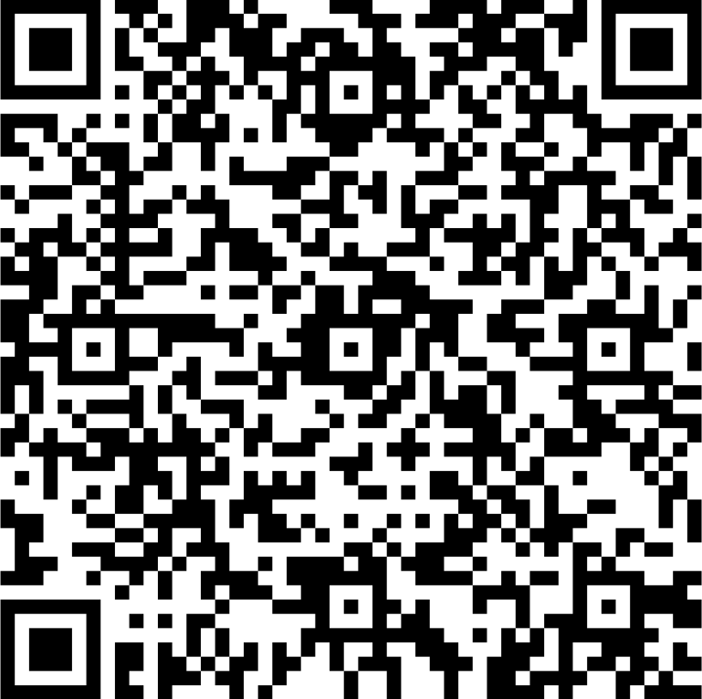

Doações para a APAE São Caetano do Sul
A sua contribuição é muito importante! Siga as instruções abaixo para realizar sua doação via Pix.
Como Realizar um Pagamento via Pix
- Em seu dispositivo, acesse o aplicativo do seu banco e vá até a área Pix;.
- Na tela principal, procure a opção Pix.
- Escolha a opção Pagar com Pix.
- Selecione a opção QR Code.
- Aponte a câmera do celular para a imagem do QR Code
- Caso prefira, você também pode digitar ou copiar e colar a chave Pix fornecida pela APAE de São Caetano do Sul.
- Insira o valor desejado
- Confira os dados e confirme o pagamento.
- Pronto! Sua doação foi realizada com sucesso.
Lembre-se: qualquer valor é bem-vindo e faz uma grande diferença!

Você está com problemas para ler o código QR Code? Copie o código abaixo e insira-o manualmente na opção transferência CPF/CNPJ